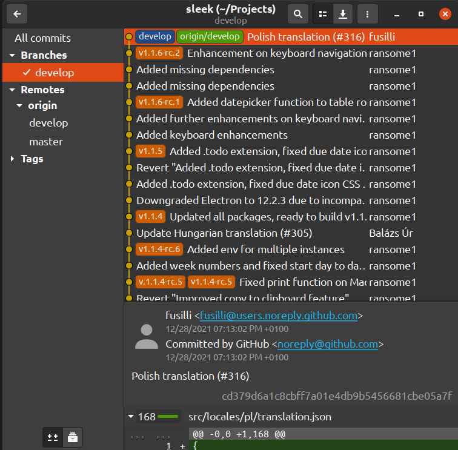
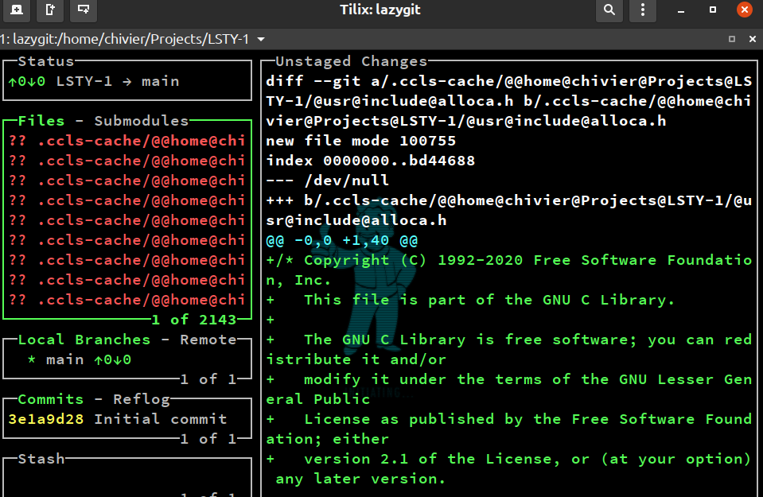

ICS课程总结
在2021年的最后，我对之前的所有实验给出一份参考。
首先先介绍各个实验的设计思路：
- Lab0：学习git的使用，方便我们进行之后的实验
- Lab1：使用LC3实现乘法，加深对补码的理解；拓展实现思路是竖式乘法，其中蕴含了“对数复杂度求解问题”的思想，以此拓展介绍其他算法。
- Lab2：递推方法的实现，让大家熟悉如何分配寄存器。这个流程在之后的工作中也会经常使用。例如使用尽量少的变量达到减少空间的目的，或者合理设计数据拷贝传递，达到减少复制数据的效果。
- Lab3：实现代码的优化，这里实现方案有三种：
- 找规律，数列有周期性
- 循环展开
- 打表，预先求值
- Lab4：类似于逆向的过程，第一个题可以读代码，理解递归，也可以使用枚举暴力尝试。第二个题是一个数学题，一个脑筋急转弯。
- Lab5：复现代码，同奇怪的方法进行实验，这里只要求功能上实现。由于只是功能上实现，大家自由发挥。当然，最适合LC3实现素数判定的算法是筛法。
- Lab6：想让大家秀一秀，“甚至可以有诡异的方法实现编程”（我们之前的习题课学习过Makefile，你甚至可以用Make和CMake实现）。
- LabA：实现汇编器，学习Makefile的使用。学习使用C++的STL。
- LabS：实现模拟器，学习CMake的使用，LibBoost的使用。学习下载、安装、和使用第三方库。面向对象编程的入门。
在下面的讲义中将给出所有实验原始执行方案，因为各种原因没有被执行，仅供学习试用。
Lab 0
使用git进行工作管理其实是非常方便的。在日常工作管理的时候，使用git可以带来很多便利。因为日常经常有如下需求：
- 我想把这个程序改一下接口，给另一给程序使用。
- 程序有一部分功能是完善的，但是有另一部分功能不可用，需要进行大规模debug。
- 我要和同学开黑写代码。
这种需求不可避免要用git。这里补充一些其他工具，在这里只列一些我常用的工具。
gitg：一个便捷的可视化工具，轻量免费
 在vscode里安装git插件也是非常好的选择，我日常都是这么使用的以至于我对很多git操作其实并不熟练。
Lab 1
实验思路
这是一个使用 LC3 指令复现乘法的实验，首先理解问题非常重要：什么是乘法
The multiplication of whole numbers may be thought of as repeated addition; that is, the multiplication of two numbers is equivalent to adding as many copies of one of them, the multiplicand, as the quantity of the other one, the multiplier. Both numbers can be referred to as factors.
这句话看起来像是一个废话，但是包含了本次试验最基本的算法：使用加法累加完成。但是如果是负数次或者0次，改定义需要拓展。对应的，程序可能需要写分支进行处理。但是这个不是这次试验的本意。
但是众所周知，LC3的机器使用补码对数字进行存储。这里需要对补码进行更加深入的认识（下面为了方便使用8位补码举例）：
$$
-2 = (11111110)_2
$$
但是如果换一种理解，我们可以认为：
$$
(11111110)2 = (100000000)_2 - (10)_2 = 256{10} - 2_{10}
$$
那么一个数字Num的补码等价于：
$$
2^{totalbits} + Num
$$
LC3中我们使用的是16位二进制，这里我们使用 $M$ 表示 $2^{totalbits}$ 。
如果使用乘法计算 $(a \times b) ; mod ; M$ ，相当于：
$$
a \times b ; mod ; M = (M + a) \times (M + b) ; mod ; M
$$
也就是说：
- 我们可以无视补码条件，直接暴力进行加法
- 即使其中一个数$x$是负数，我们也可以将它视作$(M+x)$的形式，暴力处理
那么 L 版本的代码就得到了：
1 | 0001 111 111 0 00 000 |
那么如果需要考虑性能呢？
我们会用另一种我们在小学三年级的时候用过的算法进行实现，下面举一个例子：
1 | 1 0 1 1 1 |
在列出结果之前，相比大家已经知道做法了，就是采用位移和加法的形式对数值进行相加。
下面是一个参考程序，为了方便阅读，先给出了实验的汇编形式：
1 | ADD R3, R3, #1 |
1 | 0001011011100001 |
但是这依旧不是最好的方案，显然，可以采用“循环展开”再次优化。在Lab3的分析中我将给出详细介绍。
第一次试验看似非常简单，但是蕴含了一个重要的思想：如果操作$2^x$次操作$A$可以被操作$B$替代，那么我们可以将算法进行指数级别化简。下面介绍两个类似的应用。
应用1：快速幂算法
计算$a^b ; mod ; c$。
一个简单的思路是采用我们上面L版本程序的思路：循环进行乘法
1 | int calc(int a, int b, int c) { |
而一个优化版本的方法和P版本程序思路一致：
我们计算并且记录 $a^1,a^2,a^4,a^8…$
选出上述对应的指数相加，因为$a^p \times a^q = a ^ {p + q}$。所以这里求幂的方法和之前求加法的思路一致
1 | int calc(int a, int b, int c) { |
应用2：递推公式求解
对于递推公式，例如：
$$
f(n) = a_{n-1}f(n-1) + a_{n-2}f(n-2) + a_{n-3}f(n-3) + … + a_{n-k}f(n-k)
$$
我们可以采用求解特征方程（组）的方法对其进行求解，得到一个时间复杂度为$O(1)$的算法。但是这样会有精度问题，举一个最简单的例子，对于一般的Fibonacci数列进行求解。
$$
f(1) = 1 \
f(2) = 1 \
f(n) = f(n-1) + f(n-2)
$$
容易得到通项公式为：
$$
f(n) = \frac{1}{\sqrt{5}} ((\frac{1+\sqrt{5}}{2})^{n} - (\frac{1-\sqrt{5}}{2})^{n})
$$
但是求数值的时候一定会有精度损失，特别是当n特别大的时候精度会被放大，具体原理大家学习浮点数表示方法的时候应该有所体会。所以大部分时候，我们都不会用这种方法进行计算，而是采用一个类似于应用一的方法。
$$
{\displaystyle {f(n+2) \choose f(n+1)}={\begin{pmatrix}1&1\1&0\end{pmatrix}}{f(n+1) \choose f(n)}}
$$
我们将递推公式写成矩阵形式，这样不难看出我们求下一项的方法其实是以此乘法计算。那么我们复用上一个应用的算法，得到：
$$
{\displaystyle {f(n) \choose f(n-1)}={\begin{pmatrix}1&1\1&0\end{pmatrix}}^n{f(1) \choose f(0)}}
$$
计算一个矩阵的幂我们采用类似的方法进行计算即可。
原始方案
采用和平均代码指令数，平均执行指令数的比值作为成绩。而且仅有本次实验占比的20%。这种评分方法参考清华大学的并行编程课程，我个人也非常赞同这种方案，可以看出同学之间水平的差异，也方便评分，不至于到期末的时候大家都被教务处把分数弄得一团糟。既然这一部分因为某些原因被取消，那么大家基本都是满分了，这次实验就变得异常简单。大家都快乐的完成了实验。
Lab 2 & 3
实验思路
这两次的实验是计算一个递推关系：
- F(0) = 1
- F(1) = 1
- F(2) = 2
- F(n) = (F(n-1) + 2 * F(n-3)) mod 1024 (1 <= n <= 16384)
这里如果我们使用递归方法进行编程，那么将会耗费大量的时间，所以我们采用递推方法进行编程。同时采用类似于流水的设计方案。
参考代码如下：
1 | .ORIG x3000 |
程序性能的评估方法在这里为大家进行介绍，很多同学不会统计自己程序的时间。但是这一个部分的工作其实非常简单，而且方法非常多样，这里只介绍一种作为参考。例如上面的程序如果我要进行评测指令条数，最简单的方法是用一个“同构的程序”进行计算。
例如：
1 | int count = 0; |
每一条指令之后我都进行一个count自增操作，最后输出count即可。（所以建议使用有goto语句的语言进行同构程序评测，否则需要手动转换成while/for循环）
对于实验3的优化其实也非常简单，一个直观的思路是采取循环展开进行优化。我们举一个具体的例子进行理解。
下面有两个循环：
1 | /// Loop A |
这两个循环是否一样呢？他们看起来都计算了f的10项和g数组的10项，但是两个循环的指令数目不同。原因在于对于i的操作的数目不同。我们将两个循环完整的展开：
Loop A:
1 | f[i] = g[i] * 2; |
Loop B:
1 | f[i] = g[i] * 2; |
同样计算两项，前者用了6条指令，后者只有5条。
对于lab3的数据的设计我也采用了一个直观的方法：只评测10项，这10项我都是4的倍数，那么可以使用四次展开的方法进行优化。
但是这是否达到最优了呢？
对于特定的数据，这显然不是最优的，我们可以打表得到答案。对于一般数据，我们不难发现，这个数列其实是周期性的。所以一个能得到正常运行结果的方案是：
对于一个周期内的数据打表，周期之外的利用减法，然后输出。
原始设计方案
Lab2：使用最少寄存器进行编程（R0和R7作为输入和输出不算在内），使用5个寄存器，如果超出限制则会扣除10%的分数。使用最少指令数进行编程进行评分。
Lab3：递推的范围，公式变为
- F(n) = (F(n-1) + 2 * F(n-3)) mod 1024 (1 <= n <= 65536)
但是出于某种原因，此部分评分被移除，大家都非常愉快的完成了这两次实验。
Lab 4
实验思路
对于这次实验，其实是一个娱乐性质的游戏。我们先从第一个部分分析。
第一个部分的代码，我们给出的分析模式非常简单，只有4位需要补充。最简单的方法是进行16次枚举，配合LC3 Tool完成实验。其实希望通过这一个部分的实验收取大家的脚本，看看大家都用了什么自动化的方法和工具。
这一个部分希望借助这个代码帮大家理解递归程序的思想，原始汇编如下：
1 | .ORIG x3000 |
机器码如下：
1 | 1110010000001110 |
第二个部分的程序我这边进行了一些提示，程序是希望对7计算余数，但是有一个部分是对8计算除法，我们计算$x$对7的余数时，不妨换一个表达方法，让$x = 8k + r$其中$0 \le r < 8$
$$
x ; mod ; 7 = (8k + r) ; mod ; 7 = (k + r) ; mod ; 7
$$
有了这个提示，这个程序也就不难了，除8是通过位移进行的，对8取余数是通过AND进行计算的。
原始汇编如下：
1 | .ORIG x3000 |
原始设计
每个人拿到的程序都是不同的，是对16位bit进行随机反转得到的（不告诉你哪16位有错误）。鉴于实验难度过大，以及教务处提倡位更多同学减轻实验负担，这个部分已经被删除。于是大家都轻松愉快的完成了实验。
Lab 5
这一部分的实验显然大部分同学曲解了我的本意，实验本意是：functionally复现，也就是说我只要你判断素数即可，算法我不care。但是大部分同学都在楞写了乘法去余数，这里我只希望大家复习一下筛法求素数的算法：筛法素数百度百科
我依稀记得我在五年级的数学课本后的数学小天地（也可能是其他名字）里面学习过这个算法，相比这个算法不是很难，但是几乎没有同学用这个算法进行实践，因此我推荐大家复习一下小学数学课本。
这里程序不再详细写出，评测过程正在进行。
Lab 6
一个不需要我评讲的实验，希望大家自己学习一下自己常用语言的时间评测工具，这种属于基本技能，相比是之后的科研工作中不可或缺的一个部分，希望大家能够掌握。
Lab A&S
今年第一次采用了**程序填空+提问**的方式进行检查实验。个人来看达到了比较好的实验效果，掌握了如何构建编译环境、如何编译命令行工具。这门课的重要作用之一就是在计算机学院的学习中承担承上启下的作用。掌握一些先进的开发工具和一些正确的开发方法是一个积极向上的计算机系学生的必备素养，所以这里我坚持使用C++进行实验设计。
其中有一些设计是为了大家进行更好的理解和学习，例如：
- 汇编器实验中存留接口，可以方便有兴趣的同学设计指令集拓展，可以自己开发更有意思的部分
- 模拟器实验中采用libboost，有兴趣的同学回去了解学习这个在计算机开发
- 深入理解“指令集”如何变成一个可以执行的模型
如果明年继续设计此部分实验，我将会进行如下设计：
- 设计Python的版本
- 完成图形界面设计
- 设计扩展指令集和扩展结构，例如更多的特殊功能寄存器，或者是cache
同样，今年的此部分实验也是抄袭的重灾区，框架中给出信息过多，考察重点偏向了学生对框架的理解。明年会调节比重。
原始设计
除了完成实验，需要为自己的代码写文档，学习使用doxygen/Sphinx或这其他代码文档工具编写文档，介绍接口、算法、程序框架。鉴于期末需要减轻负担，这一部分已经被移除。
课程总结
今年的课程设计，总体而言，我个人是非常愉快的。在实验被削弱后，我想大部分同学都轻松愉快的完成了实验。
实验和习题课，我分别教授了大家：
git的使用方法
代码阅读和代码阅读辅助工具
如何在github上挑选优质项目进行学习
简单的debug技巧
简单的Markdown展示技巧
文档撰写
轻量级的多文件项目编译开发(GNU Make)
CMake项目的编译
第三方库的安装和配置
环境变量编辑
论文阅读和整理
相关文献查询
搜索引擎的使用
我希望能尽自己微薄之力，为中国科学技术大学的本科生教育提升水平和质量，希望同学们在有限的时间内学习更多的内容。如果您是其中一位按照要求完成所有实验的同学，我希望你能有所收获，并且在一个学期的挣扎和努力中，对于系统运维，软件安装，环境配置都有了自己的品味和理解。在这个学期的努力下，很多同学学会了如何使用搜索引擎，这一点并不是开玩笑，很多时候“如何精确的描述自己的问题”比解决问题往往更加重要。对此我个人深感欣慰。这门课程在计算机学院的学习中，承担了承上启下的重要作用。我希望在这门课程里，大家对计算机科学有了一个更底层，更深刻的认识。如果大家之后在其他课程的学习遇到困难也欢迎随时和我联系。
我个人也是一位就读于安老师实验室的研究生，个人能力有限，精力有限，脾气有时候也有点急躁。这个学期感谢大家参与我设计的折磨人的实验，感谢大家这个学期对我的包容和支持。
鉴于今年的教学情况，我个人对我自己进行批评和反省，并提出以下改进方案：
- 大作业提供Python版本，不是每一个同学都想学习C++，也不是每一个同学都需要会配环境
- 降低实验难度和评分要求，以更多的同学可以满分为目标设计实验
- 增加答疑时长，明年我研究生课程将结束，所以可以更多的时间为同学服务，同时我会改正自己不耐烦的坏毛病
- 对于实验补测和补交放宽条件，最好设计自动评测在线工具，方便更多的同学能随时随地检查自己实验的正确性